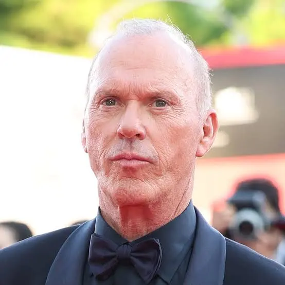
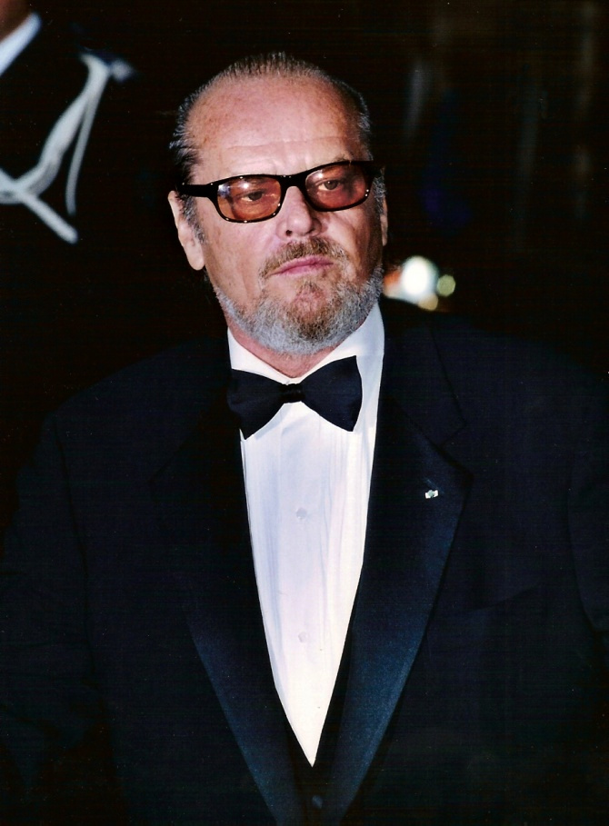

Фільм "Бетмен" (Batman) знято на основі одного з найпопулярніших в Америці коміксів. Головний герой Бетмен ховається під маскою кажана, одягнений у куленепробивний жилет і має супермашину Бетмобілем.
Сюжетна лінія коміксів – боротьба добра зі злом, відповідає найкращим традиціям цього виду мистецтва. Коли Брюс Уейн був ще хлопчиком, на його очах розігралася страшна трагедія, він став свідком смерті своїх батьків. Їх безжально вбили на вулиці міста Готем під час спроби пограбування. Все небезпечніше ставало місто, все частіше жителі міста зазнавали насильства та пограбування. Здавалося б у Готема немає майбутнього, але в найважчий для мешканців час з'являється захисник. Гроза злочинного світу, загадковий герой у костюмі кажана - «Бетмен», стає на захист мирних громадян.
Хто ж насправді ця таємнича особистість, хто ховає обличчя за маскою супергероя, цю таємницю намагаються розкрити репортер Нокс і журналістка Вікі Вейл. Однак зло не дрімає і ось черговий злочинець, намагаючись втекти від копів, потрапив у чан із хімікатами, так з'явився Джокер, страшний сон для міста Готем.
Майкл Кітон: — Бетмен / Брюс Вейн
Джек Ніколсон: — Джокер / Джек Нейпір